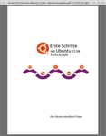

MuPDF
Dieser Artikel wurde für die folgenden Ubuntu-Versionen getestet:
Ubuntu 16.04 Xenial Xerus
Ubuntu 14.04 Trusty Tahr
Zum Verständnis dieses Artikels sind folgende Seiten hilfreich:
|  |
Ubuntu Manual Project  in MuPDF |
MuPDF  ist ein PDF-Betrachter, dessen (Geschwindigkeits-)Vorteile sich zum einen bei sehr großen PDF-Dateien und zum anderen auf älteren Rechnern zeigen. Nicht jedermanns Geschmack dürfte dagegen die Navigation ausschließlich über die Tastatur sein. Und es gibt noch weitere Einschränkungen: so wurde die Geschwindigkeitssteigerung nur durch Verzicht auf die Unterstützung von Formular- und JavaScript-Funktionen möglich (erst ab Version 1.2 vorhanden) und eine Druckfunktion ist nicht integriert.
ist ein PDF-Betrachter, dessen (Geschwindigkeits-)Vorteile sich zum einen bei sehr großen PDF-Dateien und zum anderen auf älteren Rechnern zeigen. Nicht jedermanns Geschmack dürfte dagegen die Navigation ausschließlich über die Tastatur sein. Und es gibt noch weitere Einschränkungen: so wurde die Geschwindigkeitssteigerung nur durch Verzicht auf die Unterstützung von Formular- und JavaScript-Funktionen möglich (erst ab Version 1.2 vorhanden) und eine Druckfunktion ist nicht integriert.
Neben Linux ist das Programm auch für Windows und Smartphones (Android, IOS) erhältlich. Des Weiteren können XPS-Dateien und in neueren Versionen auch bestimmte E-Book-Formate (EPUB, FB2) angezeigt werden. Wer das Konzept von MuPDF mag, aber nicht auf eine Druckfunktion verzichten kann, schaut sich zathura an.
Installation¶
 Das Programm ist in den offiziellen Paketquellen enthalten [1]:
Das Programm ist in den offiziellen Paketquellen enthalten [1]:
mupdf (universe)
 mit apturl
mit apturl
Paketliste zum Kopieren:
sudo apt-get install mupdf
sudo aptitude install mupdf
PPA¶
Für Ubuntu 12.04 steht die Version 1.1 über ein "Personal Package Archiv" (PPA) [2] zur Verfügung.
Adresszeile zum Hinzufügen des PPAs:
ppa:mupdf/stable
Hinweis!
Zusätzliche Fremdquellen können das System gefährden.
Ein PPA unterstützt nicht zwangsläufig alle Ubuntu-Versionen. Weitere Informationen sind der  PPA-Beschreibung des Eigentümers/Teams mupdf zu entnehmen.
PPA-Beschreibung des Eigentümers/Teams mupdf zu entnehmen.
Damit Pakete aus dem PPA genutzt werden können, müssen die Paketquellen neu eingelesen werden.
Nach dem Aktualisieren der Paketquellen kann das Paket mupdf wie oben angegeben installiert werden.
Verwendung¶
In einem Terminal-Fenster [4] übergibt man den Namen des gewünschten PDF-Dokuments:
mupdf PDF-Datei
Wer MuPDF nicht über ein Terminal starten möchte, kann das Kontextmenü ( ) des jeweiligen Dateimanagers nutzen (unter Umständen muss man dort die Anwendung noch über "Öffnen mit..." hinzufügen). Oder man richtet es im Webbrowser als externes Anzeigeprogramm für PDF-Dateien ein.
) des jeweiligen Dateimanagers nutzen (unter Umständen muss man dort die Anwendung noch über "Öffnen mit..." hinzufügen). Oder man richtet es im Webbrowser als externes Anzeigeprogramm für PDF-Dateien ein.
Zur Navigation stehen verschiedene Tastenkürzel zur Verfügung (siehe unten). Ein spezielles Kommando zum Beenden des Programms ist nicht erforderlich – man schließt einfach das Programmfenster. Wer auch dazu die Tastatur benutzen möchte: Alt + F4

Tastenkürzel¶
Siehe auch die Manpage zum Programm.
| Navigationstasten | |
| Taste(n) | Funktion |
L, R | Seite drehen |
h, j, k, l | scroll page |
| + | Anzeige vergrößern |
| - | Anzeige verkleinern |
w, W | Anzeige an Fenstergröße anpassen. w steht für "Seitenbreite", W für "Ganze Seite". Falls nichts passiert, vorher die Fenstergröße ändern. |
r | Dokument neu laden |
.Bild ↓ → | Nächste Seite |
,bBild ↑ ← | Vorherige Seite |
| > | 10 Seiten auf einmal vorwärts blättern |
| < | 10 Seiten auf einmal rückwärts blättern |
m | Lesezeichen für aktuelle Seite setzen |
t | zum Lesezeichen springen |
Xm | Lesezeichen können auch nummeriert werden. Insgesamt stehen 10 Stück (X = 0 - 9) zur Verfügung. Beispiel: 1m |
Xt | Zum Lesezeichen X springen. Beispiel: 1t |
| ⏎ , Enter | Gehe zu Seite 1 |
Xg | Gehe zu Seite X (Beispiel: 123g) |
| / | Suche nach... |
n, N | Weitersuchen (N sucht rückwärts) |
c | zwischen Graustufen- oder Farbmodus umschalten |
Weitere Werkzeuge¶
 Über die offiziellen Paketquellen ist ein weiteres Paket mit Hilfsprogrammen für die Kommandozeile vorhanden:
Über die offiziellen Paketquellen ist ein weiteres Paket mit Hilfsprogrammen für die Kommandozeile vorhanden:
mupdf-tools (universe)
mit apturl
Paketliste zum Kopieren:
sudo apt-get install mupdf-tools
sudo aptitude install mupdf-tools
Enthalten sind:
pdfdraw- mehrseitige PDF-Dokumente in eine Serie von Bilddateien konvertierenpdfclean- Werkzeug, um PDF-Dokumente neu zu schreiben. Kann zum Reparieren, Entschlüsseln oder Dekomprimieren verwendet werden.pdfshow, pdfextract, pdfinfo- Debug-Werkzeuge, um interne Objekte und weitere Informationen zum PDF-Dokument anzuzeigen sowie Bilder und Schriften (Fonts) zu extrahieren.
Ab Version 1.1¶
Die eben genannten Kommandozeilenwerkzeuge wurden in der Version 1.1 (aus dem PPA) zu zwei Programmen zusammengefasst:
mudraw- mehrseitige PDF-Dokumente in eine Serie von Bilddateien konvertierenmubusy- enthält die ehemaligen Einzelprogrammepdfclean,pdfshow,pdfextractundpdfinfo. Die Differenzierung, welches Werkzeug benutzt werden soll, erfolgt beim Programmaufruf. Beispiel: stattpdfclean OPTIONEN
lautet der neue Befehl
mubusy clean OPTIONEN
Ab Version 1.2¶
Ab Ubuntu 13.10 sind die mupdf-tools als Version 1.2 oder neuer in den offiziellen Paketquellen enthalten. Die Befehle lauten nun:
mudrawmutool
Links¶
PDF auf Steroiden – Anspruchsvolle PDF-Dokumente mit MuPDF anzeigen
- LinuxUser, 07/2015 Install/Upgrade PDF Viewer MuPDF 1.7 in Ubuntu 14.04/12.04
- Blogbeitrag, 04/2015Quickly Open Large PDF Files Even On Slow Machines With MuPDF
- Blogbeitrag Web Upd8, 08/2012SumatraPDF
- auf MuPDF basierendes Windowsprogramm, kann mit Wine auch unter Linux genutzt werdenPDF
 Übersichtsseite
Übersichtsseite
- Erstellt mit Inyoka
-
 2004 – 2017 ubuntuusers.de • Einige Rechte vorbehalten
2004 – 2017 ubuntuusers.de • Einige Rechte vorbehalten
Lizenz • Kontakt • Datenschutz • Impressum • Serverstatus -
Serverhousing gespendet von